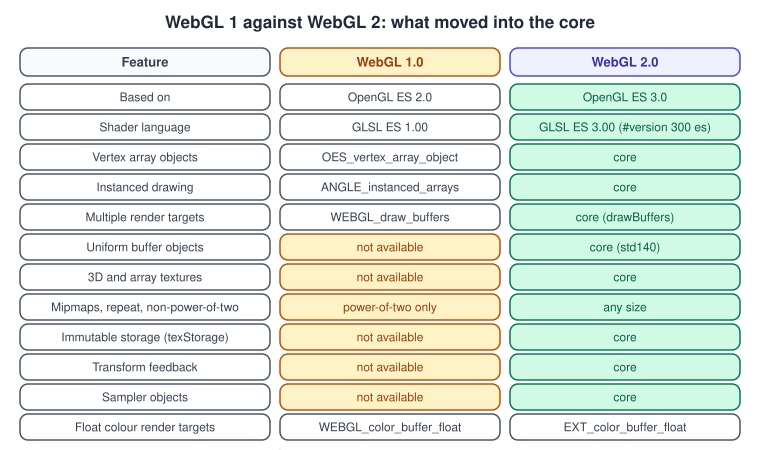
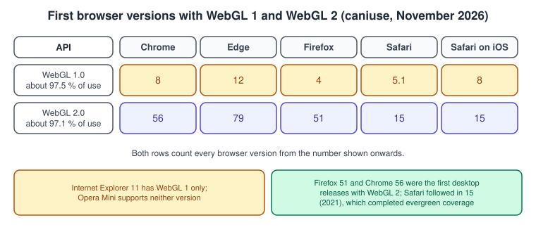
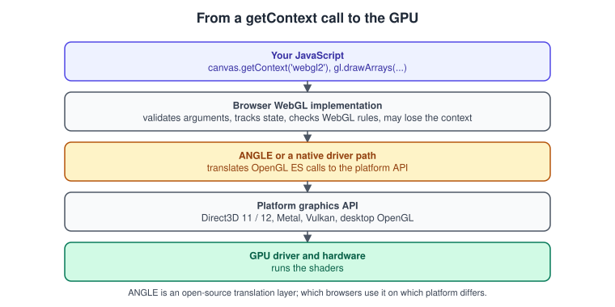

WebGL Versions and Browser Support
|
This content was generated with the assistance of AI and should be verified against the official documentation before being relied on in production. |
WebGL is the browser’s binding of OpenGL ES. Two versions exist, they are not interchangeable, and a page chooses one when it creates a context. This page explains what separates them, which browsers run which version, how to ask for the right context, how to detect what you actually received, and how to write a small amount of code that works whether the GPU is a discrete card, a phone, or a software rasteriser. It is the first page of the raw WebGL track of the Bookshelf example, before any triangle is drawn: Your First Triangle in WebGL 2 puts the detection code of this page to work.
The facts were checked in November 2026. The versions documented are WebGL 1.0 (derived from OpenGL ES 2.0, GLSL ES 1.00) and WebGL 2.0 (derived from OpenGL ES 3.0, GLSL ES 3.00), both published by the Khronos Group as living specifications whose editor’s drafts are dated June 2026. The requirements are a current evergreen browser on any desktop or mobile platform and, for the code in this page, a local web server (opening the HTML file from disk works for this page, but not for the textures of later pages). The relationship of WebGL to desktop OpenGL and to C++ ES code is the subject of OpenGL and WebGL; this page concentrates on the browser side.
Two versions, one lineage

WebGL 1.0 exposes the feature set of OpenGL ES 2.0: a programmable pipeline with vertex and fragment shaders in GLSL ES 1.00, buffers,
textures, renderbuffers and framebuffers. Everything beyond that baseline arrives as an extension that the page requests with
getExtension and that may be missing on a given device. WebGL 2.0 is based on OpenGL ES 3.0 and makes many of the commonly used
extensions part of the core API, so code can rely on them without a runtime check. It is also a superset: a WebGL2RenderingContext
has every method of a WebGLRenderingContext, so WebGL 1 style code keeps working on a WebGL 2 context.
The consequences that matter most in practice:
-
The shading language changes. WebGL 1 uses
attribute,varyingand the built-ingl_FragColor. WebGL 2 shaders start with#version 300 es, useinandout, declare their own fragment output and can use integer types,textureinstead oftexture2D, andlayout(location = n). A WebGL 1 shader is not valid when loaded into a WebGL 2 context as a#version 300 esprogram, and the reverse is also true. See GLSL ES 1.00 and 3.00. -
Vertex array objects are core. In WebGL 1 they need
OES_vertex_array_object; without it, every draw call re-specifies its attribute pointers. See Buffers, Attributes, Uniforms and VAOs. -
Texture rules relax. WebGL 1 restricts mipmaps and the
REPEATwrap mode to power-of-two textures; WebGL 2 lifts that, and addstexStorage2D, 3D textures, array textures, integer textures and sampler objects. See Textures and Samplers. -
Rendering features arrive in the core: instanced drawing, multiple render targets, transform feedback, uniform buffer objects, queries, sync objects and multisampled renderbuffers with
blitFramebuffer. See WebGL 2 Advanced Features and Framebuffers and Render to Texture. -
Neither version has compute shaders, shader storage buffers, geometry or tessellation shaders. WebGL 2 did not adopt OpenGL ES 3.1 or 3.2. For compute in the browser the answer is WebGPU, compared in WebGPU Overview and Comparison.
-
The WebGL specification may differ from OpenGL ES where the web needs it for security or portability (for example, mapped buffers are not exposed), so the Khronos WebGL text, not the ES text, is the authority when they disagree.
The OpenGL ES mapping
| Aspect | WebGL 1.0 | WebGL 2.0 |
|---|---|---|
Derived from |
OpenGL ES 2.0 |
OpenGL ES 3.0 |
Shading language |
GLSL ES 1.00 ( |
GLSL ES 3.00 ( |
Context type string |
|
|
JavaScript interface |
|
|
Fragment output |
|
a declared |
Texture sampling function |
|
|
Integer vertex attributes and |
no |
yes |
Extensions needed for the features above |
several |
none for the core list |
Source: MDN: WebGL2RenderingContext
The desktop-OpenGL side of the mapping, including which GL 4.x features have no WebGL equivalent, is drawn in OpenGL and WebGL. On Android the same lineage is the native OpenGL ES API, described in Graphics, Canvas and OpenGL ES on Android.
Browser support in November 2026

According to caniuse in November 2026, WebGL 1 is usable by about 97.5 % of global traffic and WebGL 2 by about 97.1 %. WebGL 2 shipped in Chrome 56 and Firefox 51 (both early 2017), Edge 79 (the Chromium-based Edge) and Safari 15 on macOS and iOS (2021), so every evergreen browser has had it for years. The practical meaning: for new work that targets current browsers, target WebGL 2, and consider WebGL 1 only if you have to support devices that never received a browser update, or very constrained embedded web views. Internet Explorer 11 was the last IE and supported only a subset of WebGL 1; it is retired and is not a target.
| Question | Answer in 2026 | What to do |
|---|---|---|
Is WebGL 2 available everywhere that matters? |
Yes on current Chrome, Edge, Firefox and Safari, on desktop and mobile. |
Request |
Does Safari on iOS behave like Safari on macOS? |
They share an engine, and WebGL 2 arrived in both with version 15. |
Test on a real device; GPU limits, memory and thermal behaviour differ. |
Do all machines have a hardware GPU? |
No. Virtual machines, remote desktops, blocklisted drivers and some CI runners use a software rasteriser. |
Detect it (see below) and lower the quality, or show a message. |
Can a GPU be blocklisted? |
Yes. Browsers disable WebGL on drivers with known bugs, and the context creation then fails. |
Always handle a null return from |
Is WebGPU a replacement? |
It is the successor, available in current Chrome, Edge, Safari and Firefox on several platforms, but it is still a Candidate Recommendation Draft, not a finished W3C Recommendation. |
See WebGPU Overview and Comparison; WebGL 2 remains the broad-reach choice. |
Source: Can I use: WebGL 2; Can I use: WebGL
Related platform features have their own support tables. OffscreenCanvas, needed to render from a worker (see OffscreenCanvas and Workers), is available in Chrome 69, Firefox 105 and Safari 17 and later according to caniuse. Support for individual WebGL extensions varies per browser and per GPU and is therefore detected at run time; see Extensions.
Source: Can I use: OffscreenCanvas
What sits below the API: ANGLE

The browser does not hand your calls straight to the driver. It first validates every argument against the WebGL rules (which are stricter than ES), then translates the call for the platform’s graphics API. Many browsers use ANGLE, an open-source library that implements OpenGL ES on top of Direct3D, Metal, Vulkan or desktop OpenGL, so that one WebGL implementation behaves consistently on very different systems. The practical effects for application authors:
-
Behaviour is mostly consistent, but limits and performance differ between GPUs, so never assume your development machine’s
MAX_TEXTURE_SIZEor number of texture units on a user’s device. -
Validation and the process boundary between page and GPU make some calls expensive. Calls that read state back (
getError,getParameter, reading pixels, checking shader compile status) can force a synchronisation. This is expanded in Performance and Debugging. -
A driver bug can lead to a lost context or a blocklisted GPU. See Context Loss and Robustness.
Creating a context
const canvas = document.querySelector("canvas");
const gl = canvas.getContext("webgl2", { antialias: true, powerPreference: "high-performance" });
if (!gl) {
// WebGL 2 is unavailable, disabled, or blocklisted
}A canvas has one context type for its lifetime: after the first successful getContext("webgl2"), asking the same canvas for
"webgl" or "2d" returns null (while asking again for "webgl2" returns the same object). To switch, replace the canvas element. The
older string "experimental-webgl" was a pre-standard alias; modern code does not need it.
The second argument is a dictionary of context attributes. They are fixed at creation time and cannot be changed later (the one
exception is xrCompatible, which has a separate asynchronous method). They describe the drawing buffer the browser creates for you.
| Attribute | Default | Meaning |
|---|---|---|
|
true |
The drawing buffer has an alpha channel, which the page compositor can use to blend the canvas with the page behind it. Set |
|
true |
Request multisample antialiasing of the default framebuffer, if the implementation supports it. Offscreen framebuffers you create yourself are not affected. |
|
true |
Request a depth buffer of at least 16 bits. |
|
false |
Request a stencil buffer of at least 8 bits. |
|
true |
The compositor assumes the buffer holds premultiplied alpha colours. If your shader writes straight alpha, the canvas looks wrong over a coloured page. |
|
false |
Keep the buffer contents after presentation instead of clearing it. Needed for |
|
"default" |
Hint for GPU selection on systems with two GPUs: |
|
false |
When true, context creation fails if the system would use a software renderer or other much slower path. See below. |
|
false |
Hint to reduce latency by decoupling the canvas paint from the event loop. |
|
false |
Hint to use a graphics adapter compatible with an immersive XR device. MDN recommends calling |
Software rendering and failIfMajorPerformanceCaveat
When no usable GPU exists, a browser may still hand you a context backed by a CPU rasteriser. It is correct but slow, and a scene that
runs at 60 frames per second on a phone can drop to a few frames per second. Setting failIfMajorPerformanceCaveat: true turns that
case into a null return, so the page can choose a cheaper path (a 2D canvas, a static image, fewer lights) instead of freezing. Use
it when a software fallback would be worse than no WebGL; leave it off when a slow but working scene is acceptable. The routine below tries the strict request first and
retries with the default on a fresh canvas.
Detecting what you got
Creating the context is not the end of detection. A robust start-up routine does four things: try WebGL 2, fall back to WebGL 1 only if you really have a fallback implementation, record the version and renderer for diagnostics, and read the limits your renderer depends on.
<!doctype html>
<html lang="en">
<head>
<meta charset="utf-8">
<meta name="viewport" content="width=device-width, initial-scale=1">
<title>WebGL capability report</title>
<style>
body { font: 14px/1.5 system-ui, sans-serif; margin: 1.5rem; }
pre { background: #f4f4f5; padding: 1rem; overflow-x: auto; }
</style>
</head>
<body>
<h1>WebGL capability report</h1>
<pre id="out"></pre>
<script type="module">
const out = document.getElementById("out");
const lines = [];
/** Try the strict WebGL 2 request, then WebGL 2 without the caveat, then WebGL 1. */
function createContext() {
const attempts = [
{ type: "webgl2", attrs: { failIfMajorPerformanceCaveat: true } },
{ type: "webgl2", attrs: {} },
{ type: "webgl", attrs: {} },
];
for (const { type, attrs } of attempts) {
// A fresh canvas per attempt: a canvas keeps the first context type it was given.
const canvas = document.createElement("canvas");
const gl = canvas.getContext(type, attrs);
if (gl) {
return { gl, type, strict: Boolean(attrs.failIfMajorPerformanceCaveat) };
}
}
return null;
}
const result = createContext();
if (!result) {
lines.push("No WebGL at all: show a static image or a message.");
} else {
const { gl, type, strict } = result;
const isWebGL2 = type === "webgl2";
lines.push(`context type : ${type}`);
lines.push(`hardware GPU path : ${strict ? "yes (strict request succeeded)" : "not guaranteed"}`);
lines.push(`VERSION : ${gl.getParameter(gl.VERSION)}`);
lines.push(`SHADING_LANGUAGE : ${gl.getParameter(gl.SHADING_LANGUAGE_VERSION)}`);
// Optional and privacy sensitive: some browsers return generic values or omit the extension.
const dbg = gl.getExtension("WEBGL_debug_renderer_info");
if (dbg) {
lines.push(`UNMASKED_RENDERER : ${gl.getParameter(dbg.UNMASKED_RENDERER_WEBGL)}`);
}
const limits = [
"MAX_TEXTURE_SIZE", "MAX_CUBE_MAP_TEXTURE_SIZE", "MAX_RENDERBUFFER_SIZE",
"MAX_VERTEX_ATTRIBS", "MAX_VARYING_VECTORS", "MAX_TEXTURE_IMAGE_UNITS",
"MAX_VERTEX_UNIFORM_VECTORS", "MAX_FRAGMENT_UNIFORM_VECTORS",
];
if (isWebGL2) {
limits.push("MAX_DRAW_BUFFERS", "MAX_3D_TEXTURE_SIZE", "MAX_ARRAY_TEXTURE_LAYERS",
"MAX_UNIFORM_BUFFER_BINDINGS", "MAX_SAMPLES");
}
for (const name of limits) {
lines.push(`${name.padEnd(20)}: ${gl.getParameter(gl[name])}`);
}
const wanted = [
"EXT_color_buffer_float", "EXT_texture_filter_anisotropic", "KHR_parallel_shader_compile",
"WEBGL_compressed_texture_s3tc", "WEBGL_compressed_texture_astc", "WEBGL_compressed_texture_etc",
"OES_texture_float_linear", "EXT_disjoint_timer_query_webgl2",
];
for (const name of wanted) {
lines.push(`${name.padEnd(36)}: ${gl.getExtension(name) ? "available" : "missing"}`);
}
}
out.textContent = lines.join("\n");
</script>
</body>
</html>Source: MDN: WebGL best practices
Three details of this routine are worth repeating in your own code:
-
A new canvas per attempt. A canvas keeps the first context type that succeeded, so reusing one element across attempts could leave a
webglcontext blocking a laterwebgl2request. -
Limits are queried, not assumed. MDN lists the minimums that effectively every device meets, such as 4096 for
MAX_TEXTURE_SIZE, 16 vertex attributes and 8 texture units in the fragment shader. A desktop GPU often reports far more; a phone may report less than you expect. Query the value your technique needs. -
getExtensionreturnsnullfor an unavailable extension. Every optional feature needs a branch. The extension registry is explained in Extensions. Float colour buffers, for example, needEXT_color_buffer_floaton WebGL 2 and other extensions on WebGL 1, and blending 32-bit float targets needsEXT_float_blend.
WEBGL_debug_renderer_info exposes the GPU name and is useful in bug reports, but it contributes to browser fingerprinting; browsers may
restrict or generalise it. Do not branch on specific GPU strings if you can test for a capability instead. The privacy side is covered in
Security, CORS and Privacy.
Choosing a target version
| Situation | Recommendation |
|---|---|
New application for current browsers |
WebGL 2 only. Use |
Library that must run on old devices |
Write against WebGL 2 and keep a WebGL 1 path behind the same interface, or accept the narrower audience. Libraries such as three.js removed their WebGL 1 path in r163; see Getting Started with three.js. |
Code ported from OpenGL ES 2.0 (older mobile or tutorial code) |
It runs on WebGL 1 unchanged in spirit; port to WebGL 2 step by step, starting with the |
Need compute shaders or storage buffers |
Neither WebGL version has them. Use WebGPU, or emulate with render-to-texture passes and transform feedback. |
Need the broadest reach plus a modern look |
WebGL 2 today, with an optional WebGPU path where it is available. |
Where the Bookshelf example fits: every raw WebGL page after this one assumes a WebGL 2 context created with the routine above and
shaders that start with #version 300 es. The three.js track in Getting Started with three.js
uses WebGL 2 through three.js and optionally WebGPU later.
Where the older books are outdated
| Book statement | Today |
|---|---|
WebGL: Up and Running (PAR), chapter 7: Internet Explorer has no WebGL, Safari needs a developer-menu toggle, and iOS supports it only inside iAd. |
WebGL 2 runs in every evergreen browser: Chrome 56, Firefox 51, Edge 79, Safari 15 on macOS and iOS. Internet Explorer is retired. |
PAR chapters 1 and 7, Three.js Cookbook (TCB) chapter 1: ask for the context with "experimental-webgl", use a prefixed requestAnimationFrame, test with Detector.js. |
Use getContext("webgl2") and |
Learning Three.js (LTJ) chapter 1 and TCB chapter 1: install an IEWebGL plugin, or disable browser security to load files from |
Use a local development server and ES modules; see JavaScript Modules and Tooling, Bundling and Publishing. |
PAR, LTJ and TCB assume WebGL 1 and GLSL ES 1.00 only. |
WebGL 2 and GLSL ES 3.00 are the baseline; WebGL 1 is the fallback, not the target. |
The books treat context creation failure as "WebGL not installed". |
Failures also come from blocklisted drivers, disabled hardware acceleration and context loss after creation; see Context Loss and Robustness. |
For the general timeline of what changed since the books were written, see the section’s What Changed Since Older Guides. For the browser-side basics (canvas, the animation loop, a minimal three.js cube), see the existing Canvas, WebGL & Three.js page.
References
-
WebGL 1.0 specification: https://registry.khronos.org/webgl/specs/latest/1.0/
-
WebGL 2.0 specification: https://registry.khronos.org/webgl/specs/latest/2.0/
-
WebGL extension registry: https://registry.khronos.org/webgl/extensions/
-
MDN, WebGL API: https://developer.mozilla.org/en-US/docs/Web/API/WebGL_API
-
MDN, HTMLCanvasElement.getContext: https://developer.mozilla.org/en-US/docs/Web/API/HTMLCanvasElement/getContext
-
MDN, WebGL2RenderingContext: https://developer.mozilla.org/en-US/docs/Web/API/WebGL2RenderingContext
-
MDN, WebGL best practices: https://developer.mozilla.org/en-US/docs/Web/API/WebGL_API/WebGL_best_practices
-
Can I use, WebGL: https://caniuse.com/webgl
-
Can I use, WebGL 2: https://caniuse.com/webgl2
-
Can I use, OffscreenCanvas: https://caniuse.com/offscreencanvas
-
ANGLE project: https://chromium.googlesource.com/angle/angle
-
WebGL: Up and Running (publisher page): https://www.oreilly.com/library/view/webgl-up-and/9781449326487/
-
Learning Three.js, second edition (publisher page): https://www.packtpub.com/en-us/product/learning-threejs-the-javascript-3d-library-for-webgl-second-edition-9781784392215
-
Three.js Cookbook (publisher page): https://www.packtpub.com/product/threejs-cookbook/9781783981182